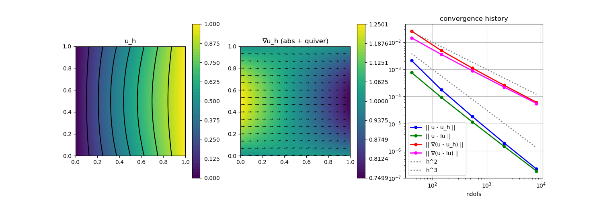

203 : Reaction-Convection-Diffusion-Problem 2D
This example computes the solution of some convection-diffusion problem
\[-\nu \Delta u + \mathbf{\beta} \cdot \nabla u + \alpha u = f \quad \text{in } \Omega\]
with some diffusion coefficient $\nu$, some vector-valued function $\mathbf{\beta}$, some scalar-valued function $\alpha$ and inhomogeneous Dirichlet boundary data.
We prescribe an analytic solution with $\mathbf{\beta} := (1,0)$ and $\alpha = 0.1$ and check the L2 and H1 error convergence of the method on a series of uniformly refined meshes. We also compare with the error of a simple nodal interpolation and plot the solution and the norm of its gradient.
For small $\nu$, the convection term dominates and pollutes the accuracy of the method. For demonstration some simple gradient jump (interior penalty) stabilisation is added to improve things.
module Example203_ReactionConvectionDiffusion2D
using GradientRobustMultiPhysics
using ExtendableGrids
using GridVisualize
# all problem data is provided by the function below
# note that the right-hand side is computed automatically
# to match the data α, β, u
function get_problem_data(ν)
α = DataFunction([0.01]; name = "α")
β = DataFunction([1,0]; name = "β")
function exact_u!(result,x)
result[1] = x[1]*x[2]*(x[1]-1)*(x[2]-1) + x[1]
end
u = DataFunction(exact_u!, [1,2]; name = "u", dependencies = "X", bonus_quadorder = 4)
∇u = eval_∇(u) # handler for easy eval of AD jacobian
Δu = eval_Δ(u) # handler for easy eval of AD Laplacian
function rhs!(result, x) # computes -νΔu + β⋅∇u + αu
result[1] = -ν*Δu(x)[1] + dot(β(), ∇u(x)) + dot(α(), u(x))
return nothing
end
f = DataFunction(rhs!, [1,2]; name = "f", dependencies = "X", bonus_quadorder = 3)
return α, β, u, ∇(u), f
end
# custom bilinearform that can assemble the full PDE operator
function ReactionConvectionDiffusionOperator(α, β, ν)
function action_kernel!(result, input)
# input = [u,∇u] as a vector of length 3
result[1] = α()[1] * input[1] + dot(β(), view(input, 2:3))
result[2] = ν * input[2]
result[3] = ν * input[3]
# result will be multiplied with [v,∇v]
return nothing
end
action = Action(action_kernel!, [3,3]; bonus_quadorder = max(α.bonus_quadorder,β.bonus_quadorder))
return BilinearForm([OperatorPair{Identity,Gradient},OperatorPair{Identity,Gradient}], action; name = "ν(∇#A,∇#T) + (α#A + β⋅∇#A, #T)", transposed_assembly = true)
end
# everything is wrapped in a main function
function main(; verbosity = 0, Plotter = nothing, ν = 1e-5, τ = 1e-2, nlevels = 5, order = 2)
# set log level
set_verbosity(verbosity)
# load a mesh of the unit square
# with four boundary regions (1 = bottom, 2 = right, 3 = top, 4 = left)
xgrid = grid_unitsquare(Triangle2D); # initial grid
# negotiate data functions to the package
α, β, u, ∇u, f = get_problem_data(ν)
# choose a finite element type, here we choose a second order H1-conforming one
FEType = H1Pk{1,2,order}
# create PDE description
Problem = PDEDescription("reaction-convection-diffusion problem")
add_unknown!(Problem; unknown_name = "u", equation_name = "reaction-convection-diffusion equation")
add_operator!(Problem, [1,1], ReactionConvectionDiffusionOperator(α,β,ν))
add_rhsdata!(Problem, 1, LinearForm(Identity, f))
# add boundary data to unknown 1 (there is only one in this example)
add_boundarydata!(Problem, 1, [1,3], BestapproxDirichletBoundary; data = u) # u_h = u in bregions 1 and 3
add_boundarydata!(Problem, 1, [2], InterpolateDirichletBoundary; data = u) # u_h = Iu in bregion 2
add_boundarydata!(Problem, 1, [4], HomogeneousDirichletBoundary) # u_h = 0 in bregion 4
# add a gradient jump (interior penalty) stabilisation for dominant convection
if τ > 0
# first we define an item-dependent action kernel...
xFaceVolumes::Array{Float64,1} = xgrid[FaceVolumes]
stab_action = Action((result,input,item) -> (result .= input .* xFaceVolumes[item[1]]^2), [2,2]; name = "stabilisation action", dependencies = "I")
JumpStabilisation = BilinearForm([Jump(Gradient), Jump(Gradient)], stab_action; AT = ON_IFACES, factor = τ, name = "τ |F|^2 [∇(#A)]⋅[∇(#T)]")
add_operator!(Problem, [1,1], JumpStabilisation)
end
# finally we have a look at the defined problem
@show Problem
# define ItemIntegrators for L2/H1 error computation and some arrays to store the errors
L2Error = L2ErrorIntegrator(u, Identity)
H1Error = L2ErrorIntegrator(∇u, Gradient)
Results = zeros(Float64,nlevels,4); NDofs = zeros(Int,nlevels)
# refinement loop over levels
Solution = nothing
for level = 1 : nlevels
# uniform mesh refinement
xgrid = uniform_refine(xgrid)
xFaceVolumes = xgrid[FaceVolumes] # update xFaceVolumes used in stabilisation definition
# generate FESpace and solve
FES = FESpace{FEType}(xgrid)
Solution = solve(Problem, FES)
# interpolate (just for comparison)
Interpolation = FEVector("I(u)",FES)
interpolate!(Interpolation[1], u)
# compute L2 and H1 errors and save data
NDofs[level] = length(Solution.entries)
Results[level,1] = sqrt(evaluate(L2Error,Solution[1]))
Results[level,2] = sqrt(evaluate(L2Error,Interpolation[1]))
Results[level,3] = sqrt(evaluate(H1Error,Solution[1]))
Results[level,4] = sqrt(evaluate(H1Error,Interpolation[1]))
end
# plot
p = GridVisualizer(; Plotter = Plotter, layout = (1,3), clear = true, resolution = (1500,500))
scalarplot!(p[1,1], xgrid, view(nodevalues(Solution[1]),1,:), levels = 7, title = "u_h")
scalarplot!(p[1,2], xgrid, view(nodevalues(Solution[1], Gradient; abs = true),1,:), levels = 7, colorbarticks = 9, title = "∇u_h (abs + quiver)")
vectorplot!(p[1,2], xgrid, evaluate(PointEvaluator(Solution[1], Gradient)), vscale = 0.8, clear = false)
convergencehistory!(p[1,3], NDofs, Results; add_h_powers = [order,order+1], X_to_h = X -> X.^(-1/2), legend = :lb, fontsize = 20, ylabels = ["|| u - u_h ||", "|| u - Iu ||", "|| ∇(u - u_h) ||", "|| ∇(u - Iu) ||"], limits = (1e-8,1e-1))
# print convergence history
print_convergencehistory(NDofs, Results; X_to_h = X -> X.^(-1/2), ylabels = ["|| u - u_h ||", "|| u - Iu ||", "|| ∇(u - u_h) ||", "|| ∇(u - Iu) ||"])
end
endThis page was generated using Literate.jl.
